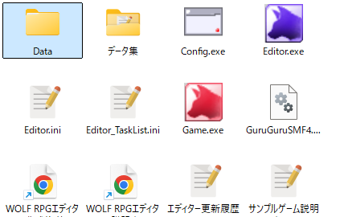
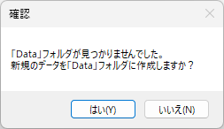
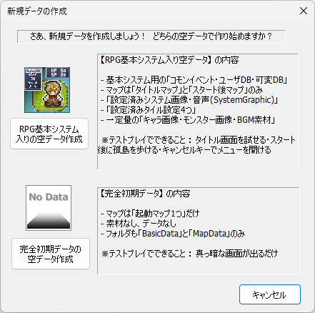
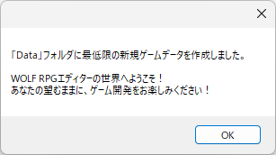

First, if you are currently using the editor,
close the editor.

[Goal]
Replace the current data with a blank dataset that does not include the sample game.
This article is compatible with Ver3.
| [1] If you want "Basic System only" or a completely blank dataset" First, if you are currently using the editor, close the editor. |
|
| [2] Delete the "Data" folder inside the "WOLF_RPG_Editor" folder. ※If you want to keep the data you've made so far, rename "Data" to something like "Data_backup" before deleting. |
 |
| [3] Launch Editor.exe. A confirmation message like the one on the right will appear. Select "Yes". |
 |
| [4] Choose whether to create a "blank dataset with Basic System" or a "completely blank dataset". Detailed descriptions are shown in the window, so read them carefully. After making your choice, the data will be copied and a new "Data" folder will be created. |
 |
| [5] The new game data has been created, and the editor will launch automatically. We look forward to the new RPG you'll create! Great work! |
 |
<Author: SmokingWOLF>